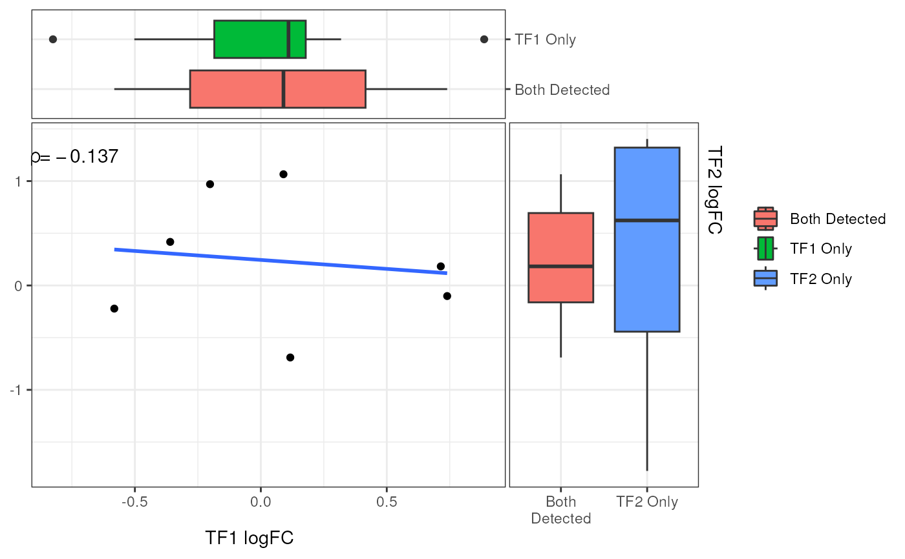
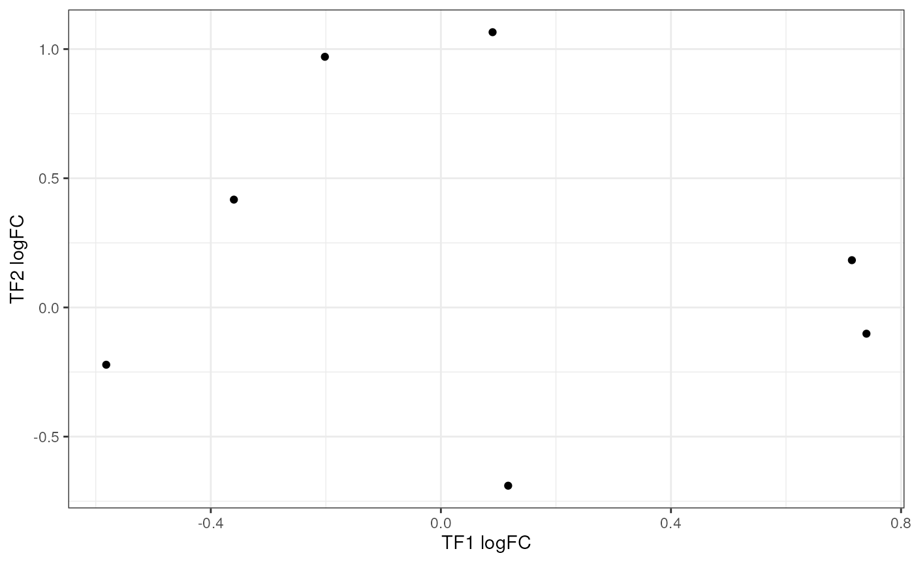
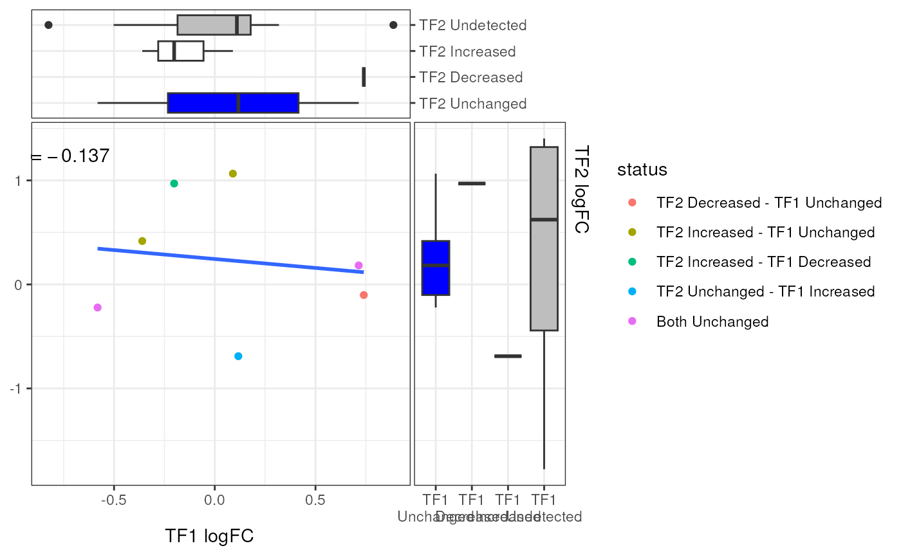
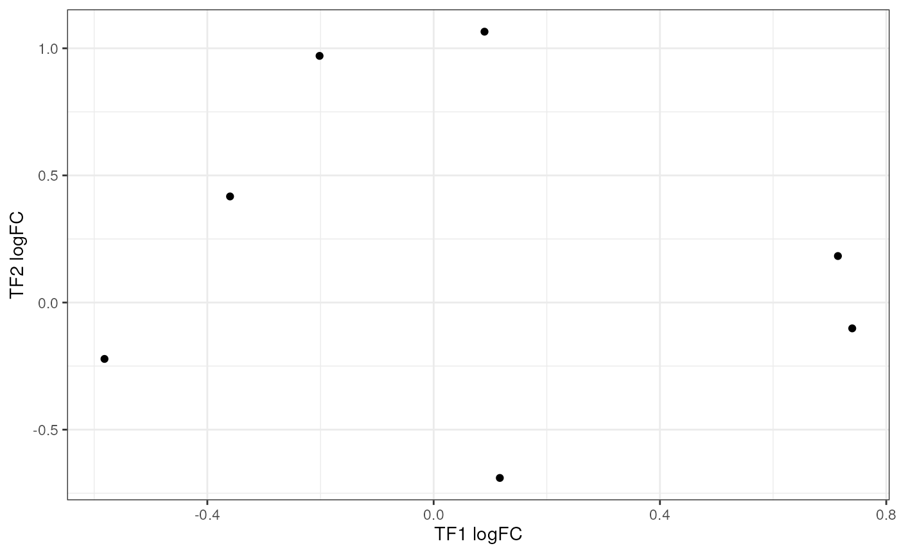
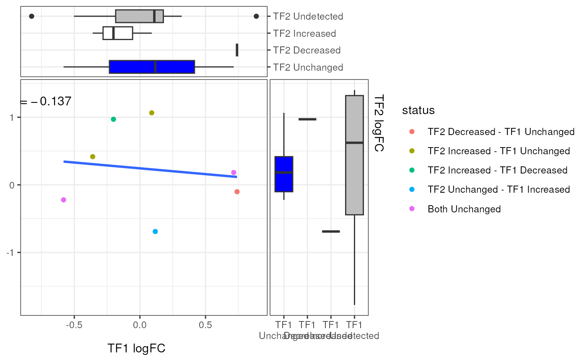

Plot Pairwise Values from a GRangeList by overlapping GRanges
plotPairwise(
x,
var,
colour,
label,
index = c(1, 2),
p = 0,
method = "union",
ignore.strand = TRUE,
min_width = 0,
xside = c("boxplot", "density", "violin", "none"),
yside = c("boxplot", "density", "violin", "none"),
side_panel_width = c(0.3, 0.4),
side_alpha = 1,
xside_axis_pos = "right",
yside_axis_label = scales::label_wrap(10),
line_col = "blue",
line_type = 1,
line_width = 1,
rho_geom = c("text", "label", "none"),
rho_col = "black",
rho_size = 4,
rho_pos = c(0.05, 0.95),
rho_alpha = 1,
label_geom = c("label_repel", "label", "text_repel", "text", "none"),
label_width = 20,
label_sep = "; ",
label_size = 3.5,
label_alpha = 0.7,
min_d = 1,
group_sep = " - ",
simplify_equal = TRUE,
name_sep = " ",
plot_theme = theme_get(),
...
)Arguments
- x
A GRangesList
- var
The colunm to compare between list elements
- colour
Optional column to use for combining across elements and setting point colour
- label
Optional column to use for labelling ranges with the most extreme changes
- index
Which list elements to compare
- p, method, ignore.strand, min_width
Passed to
makeConsensus()- xside, yside
Will call geom_(x/y)side* from the package ggside and show additional panels on the top and right of the plot respectively
- side_panel_width
Set the relative widths of the side panels
- side_alpha
Set the transparency of any side_(x/y) panels
- xside_axis_pos
Position for axis_labels in the top panel when using a discrete axis
- yside_axis_label
Wrapping for axis labels on the right-side panel when using a discrete axis. Set to waiver() to turn off wrapping
- line_col, line_type, line_width
Parameters for adding a regression line through the points. Set linecol to either
NULLorNAto hide this line- rho_geom
Used to add correlation coefficients for the two values
- rho_col, rho_size, rho_alpha
Parameters for displaying the correlation
- rho_pos
Place the correlation coefficient within the plotting region
- label_geom
Used to add labels from the column specified in label
- label_width
Label text will be truncated to this length
- label_sep
If multiple values (e.g. genes) are mapped to a range, separate values using this string
- label_size, label_alpha
Passed to the geom used for adding labels
- min_d
Labels will only be added if the points lie circle beyond a sircle of this radius
- group_sep
Text separator used to separate categories when specifying colour
- simplify_equal
logical(1) When combining columns from both elements for the colour categories, should shared values be annotated as 'Both ...' instead of having longer, more difficult to read annotations.
- name_sep
Character string to separate names of the GRangesList and the selected column. Will appear as axis-labels
- plot_theme
Sets the initial theme by using the default theme for the current R session via get_theme()
- ...
Passed to
geom_point()for the main panel
Value
A ggside or ggplot2 object
Details
This function enables pairwise plotting of two elements within a GRangesList. All elements of the GRangesList will contain the same columns, so a set of consensus ranges are first formed, before then taking all values from each GRangesList element which overlap the range and producing a piarwise plot.
Given that not all ranges will have values in both elements, side panels are produced which can show the distribution of plotted values, along with those which are only found in one of the foundational GRanges. These can take the form of density, violin or boxplots.
Addition columns, such as Differential Signal status can also be used to form pairwise groups and colour the points.
If a column in the GRangesList is suitable for labelling points, such as a
column with genes mapped to each range, this can be specified using the
argument label = "col_to_label".
Only the furthest point from the origin will be labelled within each group
used to colour the points.
Labels will only be added if they lie beyond a circle of radius min_d from
the origin.
If multiple genes are mapped to the range, these will be separated by the
string provided in the label_sep argument.
A regression line and correlation co-efficient are added to the plot by default, but can be hidden easily if preferred
Examples
theme_set(theme_bw())
set.seed(100)
gr1 <- GRanges(paste0("chr1:", seq(10, 150, by = 10)))
width(gr1) <- 5
gr1$logFC <- rnorm(length(gr1))
gr1$FDR <- rbeta(length(gr1), 1, 8)
gr2 <- GRanges(paste0("chr1:", seq(51, 250, by = 15)))
width(gr2) <- 4
gr2$logFC <- rnorm(length(gr2))
gr2$FDR <- rbeta(length(gr2), 1, 8)
grl <- GRangesList(TF1 = gr1, TF2 = gr2)
grl <- addDiffStatus(grl)
# Using the defaults
plotPairwise(grl, var = "logFC")

# Density plots on the side panels
plotPairwise(
grl, var = "logFC", xside = "density", yside = "density", side_alpha = 0.5
)
 # Turning off side panels, regression line and correlations
plotPairwise(
grl, var = "logFC", xside = "none", yside = "none",
rho_geom = "none", line_col = NULL
)

# Add colours using the status column
plotPairwise(grl, var = "logFC", colour = "status") +
scale_fill_manual(values = rep_len(c("blue", "red", "white", "grey"), 8)) +
guides(fill = "none")

# Turning off side panels, regression line and correlations
plotPairwise(
grl, var = "logFC", xside = "none", yside = "none",
rho_geom = "none", line_col = NULL
)

# Add colours using the status column
plotPairwise(grl, var = "logFC", colour = "status") +
scale_fill_manual(values = rep_len(c("blue", "red", "white", "grey"), 8)) +
guides(fill = "none")
